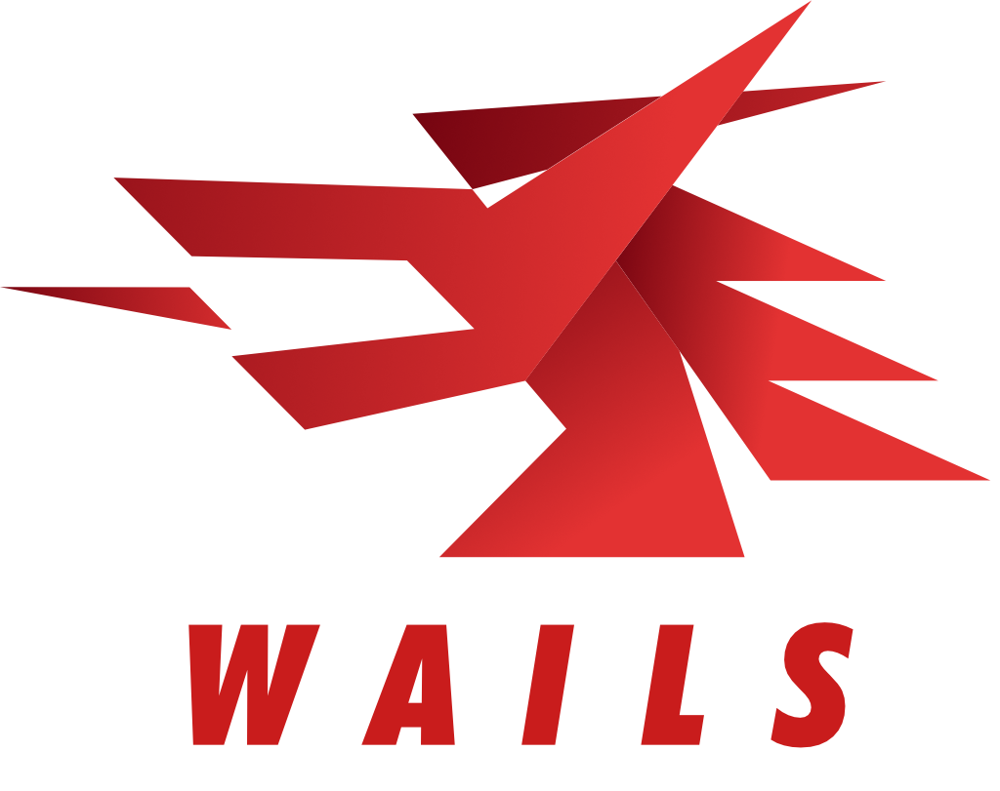

Multi-stream RTMP
Activa destinos para Twitch, YouTube, Kick y RTMP personalizado sin rehacer tu escena de OBS.

SandoDelay MultiGratis para streamers en Windows
Aplica delay a tu directo y reparte la senal RTMP a Twitch, YouTube, Kick o cualquier destino personalizado desde una sola app.
Hecho para directos reales
Activa destinos para Twitch, YouTube, Kick y RTMP personalizado sin rehacer tu escena de OBS.
Cambia entre directo, presets de 20 a 60 segundos o un valor manual cuando tu flujo lo necesite.
Aplica cambios al momento o prepara una cuenta atras para cambiar el delay con mas calma.
Abre el panel local en OBS y controla SandoDelay sin salir de tu espacio de produccion.
Reune paneles y chats de plataformas para tenerlos cerca durante el directo.
Incluye plugin para alternar modos, consultar estado y disparar acciones desde botones fisicos.
Flujo recomendado
Configura OBS para enviar la salida RTMP a SandoDelay. Despues, SandoDelay se encarga del buffer, el delay y la conexion a tus plataformas activas.
Descarga gratuita
La version actual se distribuye desde GitHub Releases. El instalador no esta firmado todavia, asi que Windows SmartScreen puede mostrar un aviso de editor desconocido la primera vez.